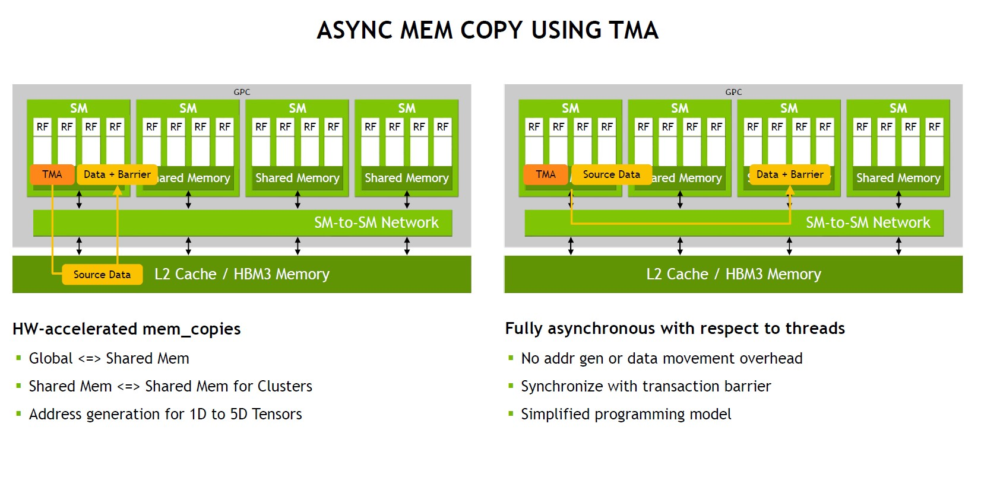
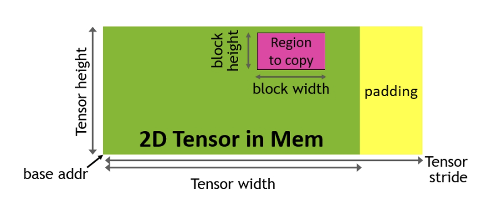
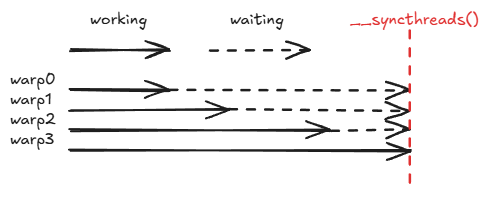
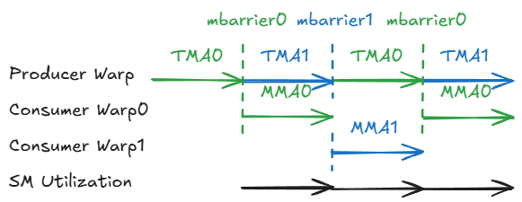

TMA

Source from ServeTheHome
TMA（Tensor Memory Accelerator）是Hopper架构中引入的异步内存搬运专用硬件。具体来讲，TMA完全接手了本该由线程处理的地址计算和越界检查，同时可以执行硬件级别的swizzle。TMA还支持cluster内multicast，cluster内SM单元shared memory通信这类cluster内通信特性。TMA还引入了硬件级别的同步原语mbarrier，可以提供更细粒度的同步机制。接下来笔者将结合CuTe封装讲解TMA的特性和用法。
CUtensorMap

TMA依赖于host中创建的descriptor来计算目标内存的地址，该描述符在cuda中被封装为128字节(byte)的结构体，该结构体在硬件层面编码了描述一个张量及其切片模式所需要的所有元数据，目前nvidia仍未公布该结构体内具体成员。我们在host通过cuda api创建CUtensorMap。
1CUtensorMap tma_desc;
2uint64_t globalDim[2] = {1024, 2048}; // 全局矩阵尺寸 1024x2048
3uint64_t globalStrides[1] = {2048 * sizeof(half)}; // 跨度
4uint32_t boxDim[2] = {64, 128}; // 每次 TMA 搬运 64x128 的 Tile
5
6cuTensorMapEncodeTiled(
7 &tma_desc, // 输出的描述符指针
8 CU_TENSOR_MAP_DATA_TYPE_FLOAT16,// 数据类型
9 2, // 维度数 (2D)
10 globalAddr, // Global Memory 指针
11 globalDim, globalStrides,
12 boxDim,
13 elementStrides,
14 CU_TENSOR_MAP_INTERLEAVE_NONE,
15 CU_TENSOR_MAP_SWIZZLE_128B, // 写入 Shared Memory 时的自动 Swizzle 模式
16 CU_TENSOR_MAP_L2_PROMOTION_L2_128B,
17 CU_TENSOR_MAP_FLOAT_OOB_FILL_NONE
18);
然后我们将desc按值传递给device函数，就可以在核函数中调用
1cp.async.bulk.tensor.2d.shared::cluster.global.mbarrier::complete_tx::bytes
2"r"(dst_addr), "l"(desc_addr), "r"(coord_x), "r"(coord_y), "r"(mbar_addr)
来触发TMA。
CuTe TMA
TMA tensor 当然也是tensor，但是当我们试图打印这个Tensor的时候，我们会发现输出和之前的tensor都不一样。
1Tensor mA = tma_a.get_tma_tensor(make_shape(M,K));
2if (thread(0)) {print(mA);}
1mA: ArithTuple(_0,_0) o (1024,1024):(_1@1,_1@0)
ArithTuple是什么，这个带@的stride又是什么呢。
TMA operand
1cp.async.bulk.tensor.2d.shared::cluster.global.mbarrier::complete_tx::bytes
2"r"(dst_addr), "l"(desc_addr), "r"(coord_x), "r"(coord_y), "r"(mbar_addr)
仔细观察这条2D PTX指令的操作数，我们发现操作数并不是直接的目标内存地址，而是"l"(desc_addr), “r”(coord_x), “r”(coord_y)，TMA描述符的地址和TMA的坐标(TMA coordinates)。而普通的CuTe Tensor储存GMEM的指针，接收坐标计算得出偏移过的内存地址，这种Tensor是无法应用于TMA的，因为我们不需要内存地址，我们只需要TMA的坐标。
Implicit CuTe Tensors
之前我们介绍Tensor的时候，强调Tensor是Layout + Iterator，这里的iterator类型非常灵活，传统Tensor中我们可以传入GMEM pointer，传入一个栈分配内存的pointer等等。其实上这个iterator可以连pointer都不是，可以是任何随机访问迭代器。
比如说 cute::counting_iterator，这个迭代器储存了起始数和步长，可以用于表示一个数列。
1Tensor A = make_tensor(counting_iterator<int>(42), make_shape(4,5));
2print_tensor(A);
1counting_iter(42) o (4,5):(_1,4):
2 42 46 50 54 58
3 43 47 51 55 59
4 44 48 52 56 60
5 45 49 53 57 61
这当然也是一个CuTe Tensor，我们可以对其应用任何合法的Tensor操作（e.g. Tiling）。有了Iterator上的自由，接下来我们创造一种迭代器以构建TMA Tensor。
ArithTupleIterators and ArithTuples
CuTe创造了ArithmeticTupleIterator类迭代器来存储TMA坐标和定义了基于TMA坐标的运算。它可以：
- dereference 到一个TMA坐标
- offset另一个TMA坐标 我们看一个例子
1ArithmeticTupleIterator citer_1 = make_inttuple_iter(42, Int<2>{}, Int<7>{});
2ArithmeticTupleIterator citer_2 = citer_1 + make_tuple(Int<0>{}, 5, Int<2>{});//offset
3print(*citer_2);//dereference(42,7,_9)
ArithTuplesIterators储存了一个ArithTuples，cute::Tuple是不可加的，ArithTuples重载了operator+，实现了TMA坐标的运算。
如此，我们就可以进行TMA坐标的运算。作者更愿意将其比较为n维向量，ArithTuples的每个元素都是正交的，其运算性质和向量一模一样。
ArithTuple定义在cute/numeric/arithmetic_tuple.hpp中。在代码中使用别名E<{}>创建。这里我们只列举几个简单的表达，当然，ArithTuple也可以嵌套。
| C++ object | Description | String representation |
|---|---|---|
E<{}> |
1 | 1 |
E<0>{} |
(1,0,…) | 1@0 |
E<1>{} |
(0,1,0,…) | 1@1 |
E<0,0>{} |
((1,0,…),0,…) | 1@0@0 |
E<0,1>{} |
((0,1,0,…),0,…) | 1@1@0 |
E<1,0>{} |
(0,(1,0,…),0,…) | 1@0@1 |
E<1,1>{} |
(0,(0,1,0,…),0,…) | 1@1@1 |
这里@表示在某个位置，比如1@0就表示 1 在第0个位置，所以我们得到(1,0,…)。值得注意的是，这里使用…表示与任意ArithTuple的可加性，比如1@0要和1@2^10仍然保持可加。ArithTuple保存数据的方式类似于压缩稀疏矩阵，只记录非0元素，这样任意ArithTuple便可以看作是一个无限维的向量，自然和所有向量都可加。
Non-integer Offsets
现在我们解决了TMA坐标运算的问题，但是我们还没有解决如何得到TMA坐标offset的问题。普通的layout会把逻辑坐标(i,j)映射为1-D offset，很显然我们并不需要如此的offset，我们希望可以把逻辑坐标(i,j)映射为TMA坐标。同样的，CuTe stride也不必须是整数，我们可以使用前面定义的ArithmeticTuple作为stride，这样逻辑坐标(i,j)就可以映射为TMA坐标。CuTe重载了operator*以实现标量和ArithmeticTuple运算。比如说，5*E<1>{}简写作5@1，表示(0,5,0,…)。
如果我们的stride是(1,100)，和(i,j)做内积会得到i + 100j，这是一个线性offset。我们使用ArithmeticTuple作为stride(1@1,1@0)，(i,j)就会被映射到i@1 + j@0 = (j,i)。我们观察这里的运算结果，(i,j)和(1,100)可以看作是线性代数中的向量，向量与向量内积得到标量，而(1@1,1@0)则是一个矩阵，向量和矩阵的内积还是一个向量。如此，我们便得到了表达TMA Tensor所有需要的工具。
Build TMA Tensors
1Tensor a = make_tensor(make_inttuple_iter(0,0),
2 make_shape ( 4, 5),
3 make_stride(E<0>{}, E<1>{}));
4print_tensor(a);
1ArithTuple(0,0) o (4,5):(_1@0,_1@1):
2 (0,0) (0,1) (0,2) (0,3) (0,4)
3 (1,0) (1,1) (1,2) (1,3) (1,4)
4 (2,0) (2,1) (2,2) (2,3) (2,4)
5 (3,0) (3,1) (3,2) (3,3) (3,4)
如此，我们便可以得到逻辑坐标到TMA坐标的Layout映射。
mbarrier
在讲解mbarrier之前，我们简单提一下Ampere时代的下的异步模型。Ampere引入的异步拷贝指令 cp.async 是绑定在当前线程/当前 Warp的异步队列上的。cp.async_commit_group 和 cp.async_wait_group 只能等待当前 Warp 之前发起的异步拷贝。但是在GMEM->SMEM的搬运中，我们通常是一个CTA block中的所有warp/线程共同搬运pipeline的一块，我们必须显式用__syncthreads()进行全局同步以保证进行mma之前该块全都是可用的。这导致的问题就是无论当前线程的数据有没有搬完，都必须等待所有线程搬完数据，这就导致了流水线的stall。

到了Hopper时代，mbarrier变成了存在于Shared Memory中独立于任何线程的物理硬件计数器，其对所有可见此内存的所有线程可见(e.g. 一个cluster中所有CTA线程)。至此，我们完全可以解耦数据搬运和计算，因为mbarrier全局可见。producer warp负责发起TMA搬运，TMA搬运不会阻塞producer warp。consumer warp和mbarrier同步，当前数据被TMA搬运完成后便执行MMA。多个Warp相互重叠，理想情况下能达到100%的SM利用率。这就是hopper时代新的编程范式Warp Specialize。

工作原理
mbarrier是基于Shared Memory中的整个cluster可见的一块内存和TMA硬件计数器更新进行同步的，mbarrier将同步拆解为了三个解耦的阶段。
初始化与期望设置（Init & Expect）
在 Shared Memory 中声明一个 mbarrier 对象。再使用 mbarrier.init.shared.b64，告诉屏障需要等待多少资源到来。比如配合 TMA 使用时，设置 mbarrier.init 期待 1024 字节的数据。
异步到达/通知（Arrive）
无论是线程还是硬件引擎，完成一部分工作后都可以对屏障发起 arrive 标记，且发起后不会被阻塞，可以继续向下执行。
TMA Auto-Arrive：TMA 每向 Shared Memory 写入完成指定字节的数据，TMA 硬件内部的逻辑会自动去递减mbarrier内部的字节计数器。
线程 Arrive：某个线程完成了前置计算，调用 mbarrier.arrive，告诉屏障前置工作准备好了，然后该线程可以继续去干别的，不需要死等。
条件等待与测试（Wait / Test）
当某个线程需要真正使用数据时，才调用mbarrier.wait或mbarrier.test_wait。硬件检查当前阶段的计数器是否为0(e.g.即期待的数据/线程全部到达)。如果未满足只有需要这个数据的线程/Warp会被挂起。当前SM可以继续执行CTA中其他Warp
mbarrier CuTe Warpper
CuTe为TMA提供了多个语义明确使用方便的c风格api。
1initialize_barrier(uint64_t& smem_barrier, // 64 bits user-manged barrier in smem
2 int thread_count = 1); // Thread count expected to arrive/wait on this barrier
3
4set_barrier_transaction_bytes(uint64_t& smem_barrier, // 64 bits user-manged barrier in smem
5 uint32_t bytes); // Number of bytes transfered by per TMA transaction
6
7wait_barrier(uint64_t& smem_barrier, // 64 bits user-manged barrier in smem
8 int phase_bit); // Current phase bit the barrier waiting to flip
9
10arrive_barrier(uint64_t& smem_barrier); // 64 bits user-manged barrier in smem